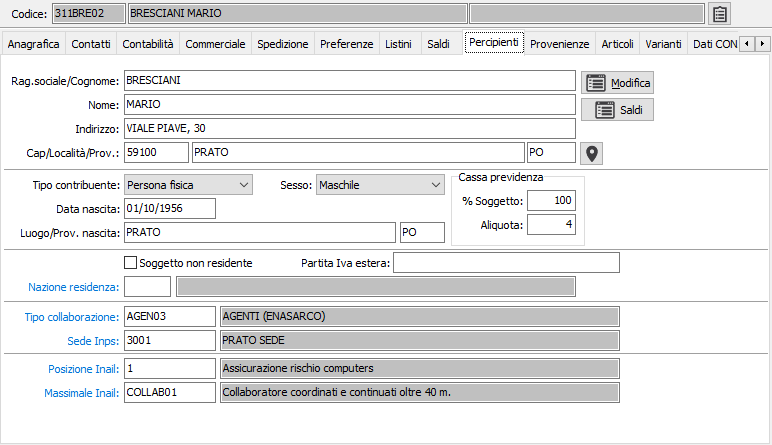
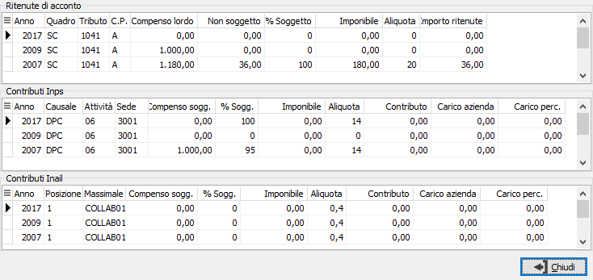

Il pulsante consente di ricercare le coordinate geografiche dell'indirizzo completo del percepente; è necessaria una connessione internet e viene aperto il browser web utilizzando Google Maps.
Il pulsante consente di ricercare le coordinate geografiche dell'indirizzo completo del percepente; è necessaria una connessione internet e viene aperto il browser web utilizzando Google Maps.Percipienti
Assegnando l'apposito valore al flag tipo fornitore, viene visualizzata la sezione Percipienti.
Al salvataggio dei dati "Persona fisica" e se i campi "data di nascita", "Provincia di nascita", "Comune di nascita", "Sesso" e "Ragione sociale" sono tutti compilati ed è presente il codice fiscale sull'anagrafica del fornitore viene effettuato un controllo di coerenza con il codice fiscale calcolato dalla procedura e quello già presente altrimenti, se vuoto il campo, viene assegnato in automatico. Per calcolare il codice fiscale viene ricercato il nome e cognome utilizzando questo procedimento: se il campo "Nome" è compilato viene assunto come nome e la ragione sociale come cognome, altrimenti nella ragione sociale viene cercato lo spazio più a destra la parte a sinistra è il cognome e la parte a destra il nome. Il codice del comune viene ricercato nella relativa tabella Comuni per descrizione e provincia. Non sono gestiti i casi di omocodia.

RAGIONE SOCIALE/COGNOME: campo alfanumerico di 50 caratteri per contenere il Cognome o la Ragione Sociale del percipiente.
NOME: campo alfanumerico di 50 caratteri per contenere il nome del percipiente
INDIRIZZO: campo alfanumerico di 50 caratteri per inserire l’indirizzo del domicilio fiscale del percipiente, nel caso in cui questo differisca da quello contenuto in anagrafica fornitori.
CAP: identifica il codice avviamento postale del domicilio fiscale del percipiente, nel caso in cui questo differisca da quello contenuto in anagrafica fornitori
LOCALITÀ: campo alfanumerico di 50 caratteri per inserire il comune del domicilio fiscale del percipiente, nel caso in cui questo differisca da quello contenuto in anagrafica fornitori
PROVINCIA: campo alfanumerico di 2 caratteri per inserire la provincia del domicilio fiscale del percipiente, nel caso in cui questo differisca da quello contenuto in anagrafica fornitori
Il pulsante consente di ricercare le coordinate geografiche dell'indirizzo completo del percepente; è necessaria una connessione internet e viene aperto il browser web utilizzando Google Maps.
TIPO CONTRIBUENTE: combo box per definire il tipo di contribuente; valori ammessi: Persona fisica, Persona Giuridica.
SESSO: combo box per definire il sesso dei contribuente; valori ammessi: Maschile, Femminile.
DATA NASCITA: campo data di 8 caratteri per inserire la data di nascita o di costituzione.
LUOGO DI NASCITA: campo alfanumerico di 50 caratteri per inserire il luogo di nascita o di costituzione.
PROVINCIA DI NASCITA: codice alfanumerico di 2 caratteri, presente nella tabella province.
CASSA PREVIDENZA: è necessario indicare la percentuale di assoggettamento e l’aliquota della cassa previdenza se si desidera attivare la possibilità di calcolare e proporre il campo “Cassa previdenza” in fase di registrazione movimento percipiente.
SOGGETTO NON RESIDENTE: check box per indicare se il percipiente è non residente in Italia.
PARTITA IVA ESTERA: campo alfanumerico di 30 caratteri per inserire l’eventuale partita IVA estera del contribuente.
NAZIONE RESIDENZA: codice della nazione di residenza. Sul campo sono attive le funzioni di vista (F9) sulla tabella nazioni.
TIPO COLLABORAZIONE PREFERENZIALE: codice alfanumerico di 8 caratteri, presente nella tabella Tipi collaborazione, per definire la tipologia abituale di collaborazione del percipiente. Sul campo sono attive le funzioni di vista (F9) e di manutenzione (CTRL+W) sulla tabella stessa.
CODICE SEDE: codice alfanumerico di 4 caratteri, presente nella tabella Sedi Inps, per indicare la sede Inps a cui deve essere inviato il modello GLAD del percipiente. Sul campo sono attive le funzioni di vista (F9) e di manutenzione (CTRL+W) sulla tabella stessa.
POSIZIONE INAIL: codice numerico di 2 caratteri, presente nella tabella Posizioni Inail, per indicare la posizione Inail che definisce l’aliquota di premio da applicare ai compensi. Sul campo sono attive le funzioni di vista (F9) e di manutenzione (CTRL+W) sulla tabella stessa.
CODICE MASSIMALE: codice numerico di 8 caratteri, presente nella tabella Massimali Inail, per indicare i limiti massimali a cui è soggetto il percipiente in esame. Sul campo sono attive le funzioni di vista (F9) e di manutenzione (CTRL+W) sulla tabella stessa.
Il pulsante Modifica, consente di apportare variazioni ai dati presenti per il percipiente; premendo il pulsante Saldi si accede alla finestra che elenca i saldi relativi alla movimentazione del percipiente.
